Logo assets, listing images, and real Free and Pro settings screens.
Upload guide · Pro readme · Image prompts
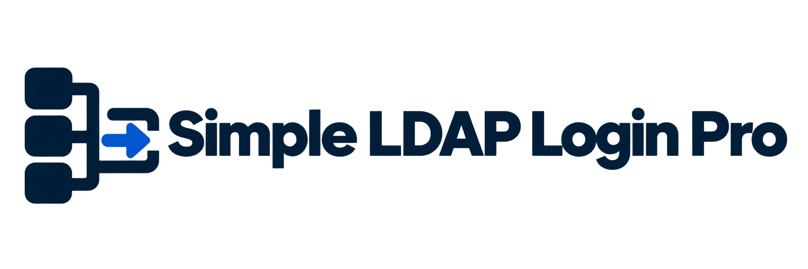
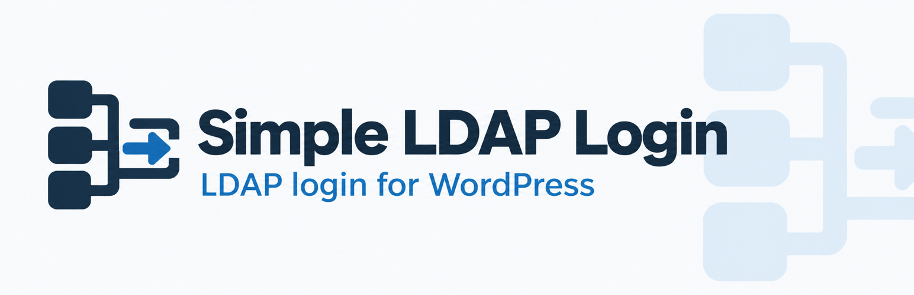
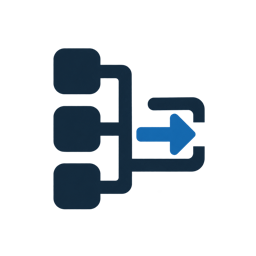
Icons: 128 × 128 and 256 × 256Banners: 772 × 250 and 1544 × 500Screenshots: 2× browser captures. Click to open.
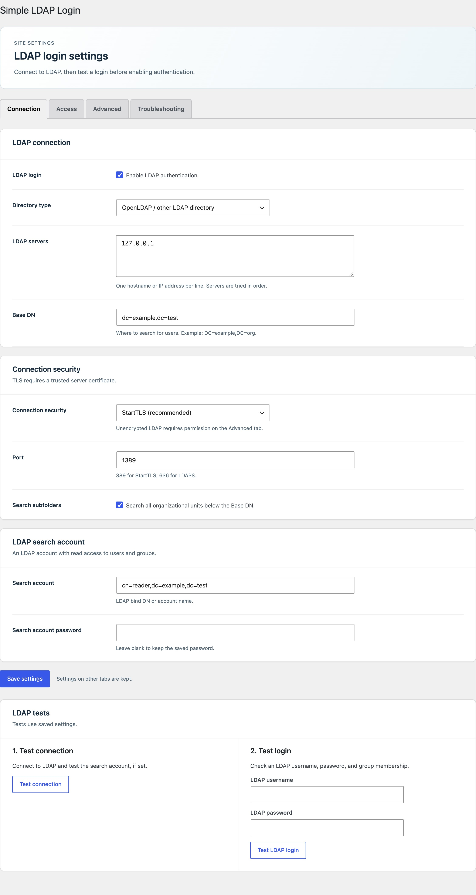
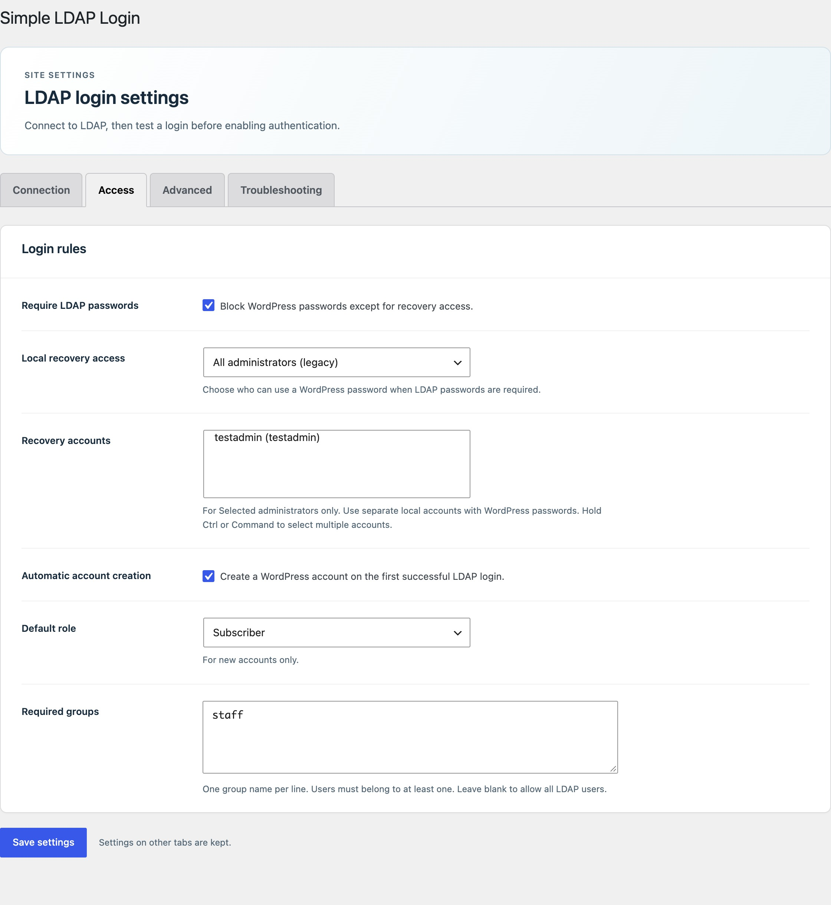
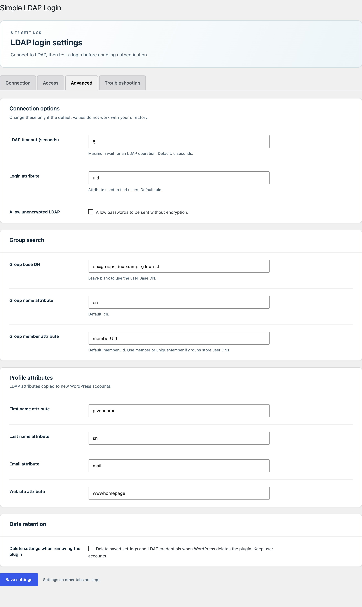
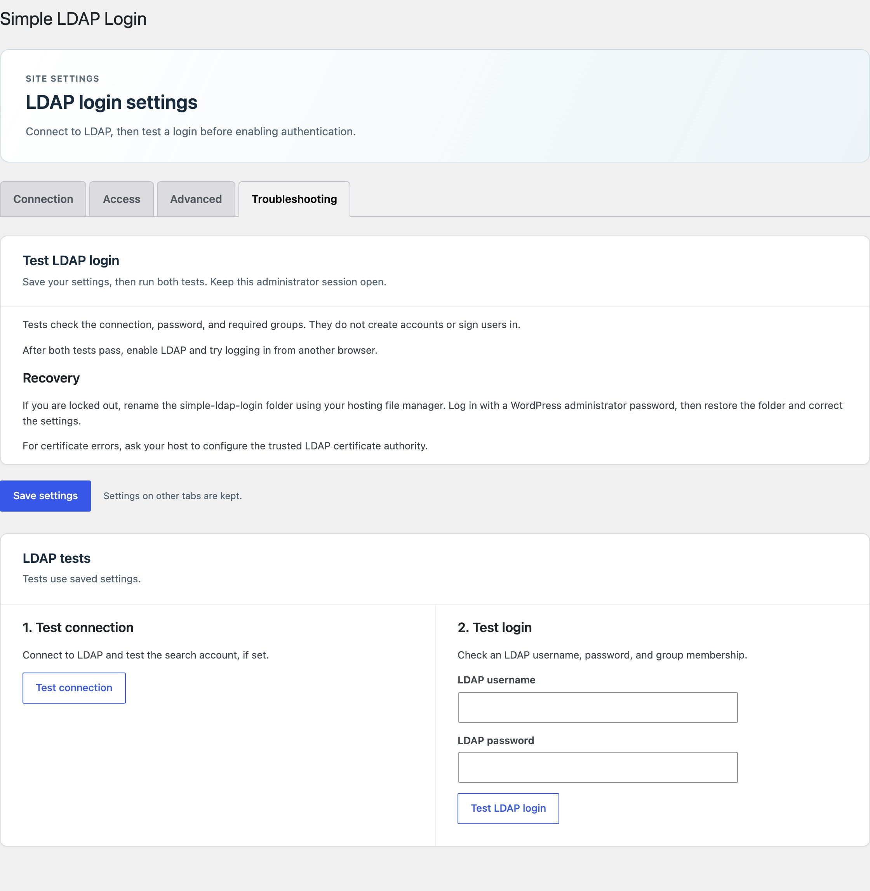
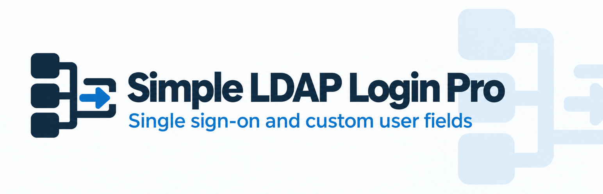
Icons: 128 × 128 and 256 × 256Banners: 772 × 250 and 1544 × 500Screenshots: 1120 pixels wide at 1× scale. Click to open.
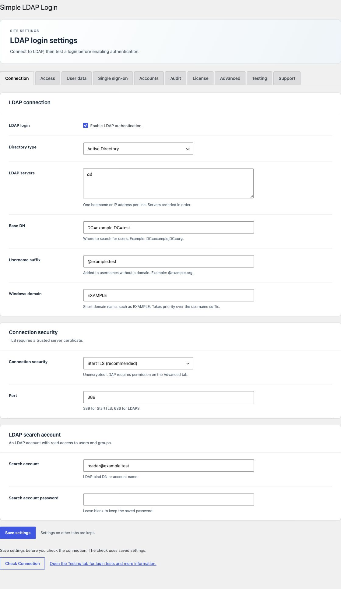
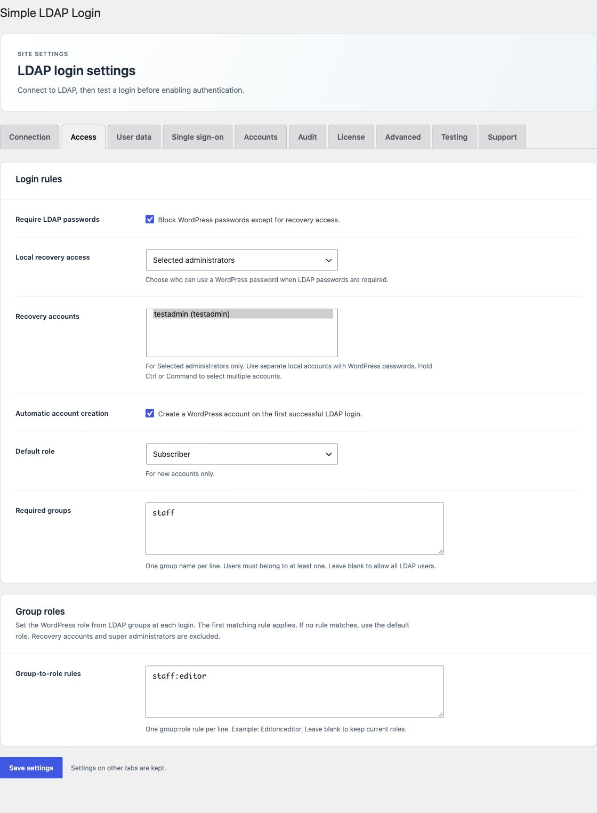
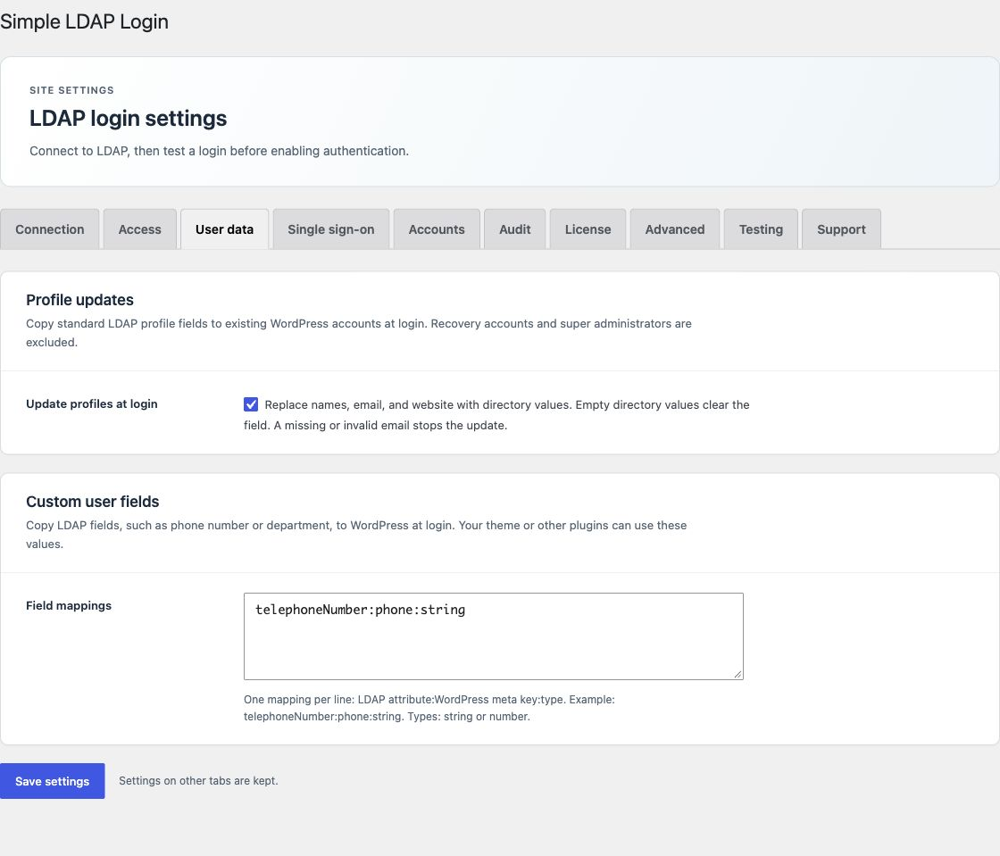
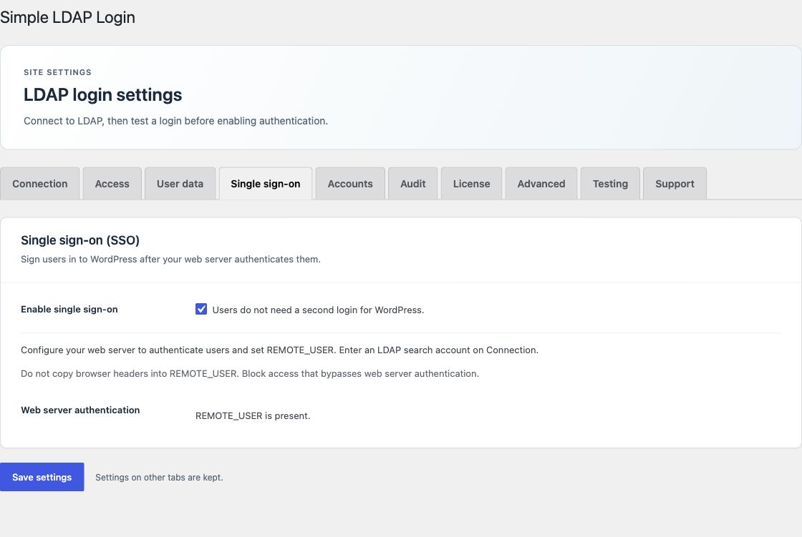
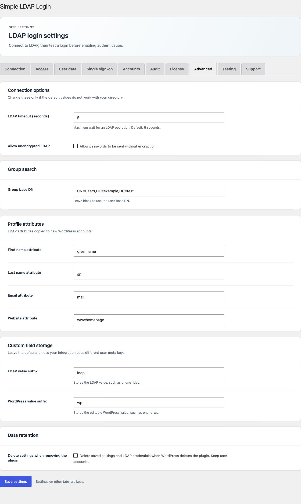
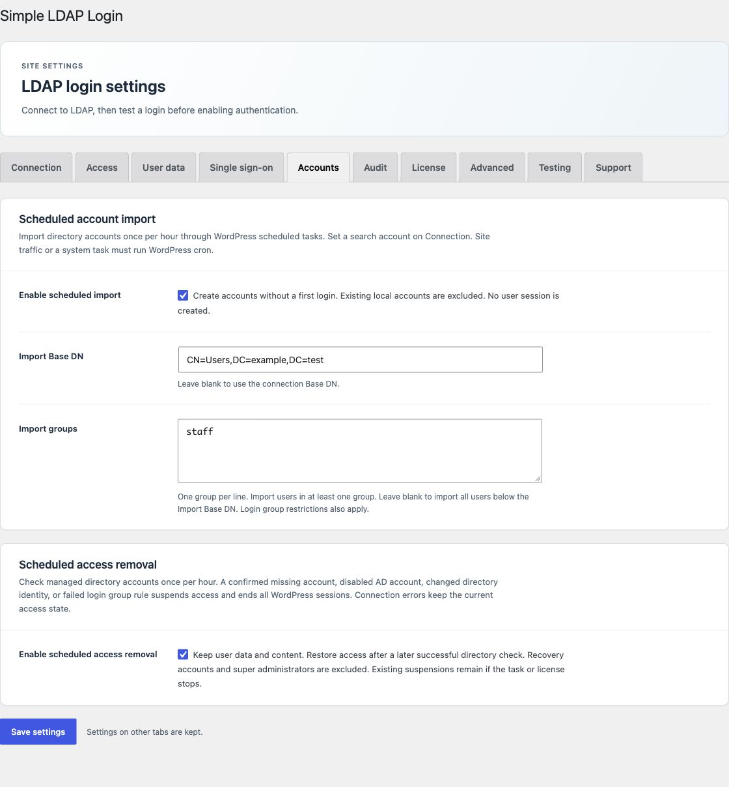
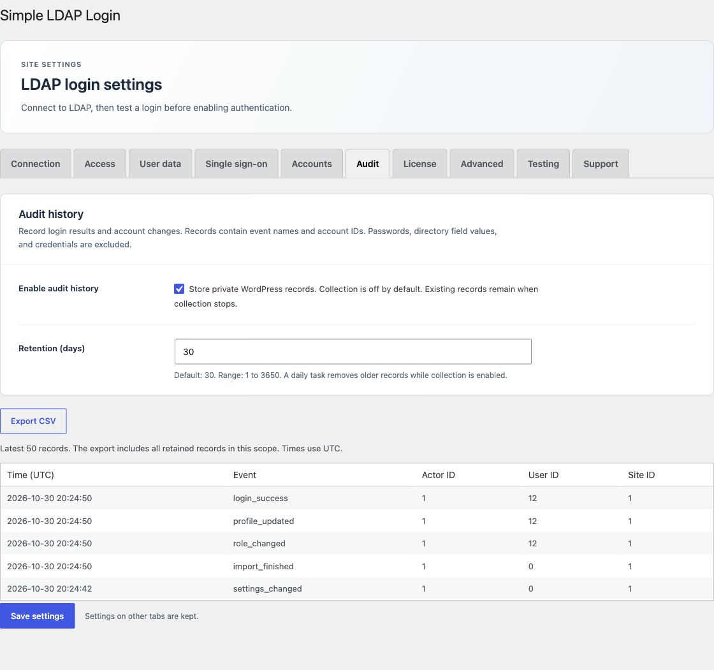
Brand art: built-in image generation. Screenshots: browser captures, cropped to the plugin settings. Example directory values come from the local test sites.